Galerie

Honesuki Suminagashi
140€

Kiritsuke Suminagashi
190€

Kudamono
140€

Nakiri
190€

Santoku
210€

Bunka
160€

Honesuki
120€

Kiritsuke
160€
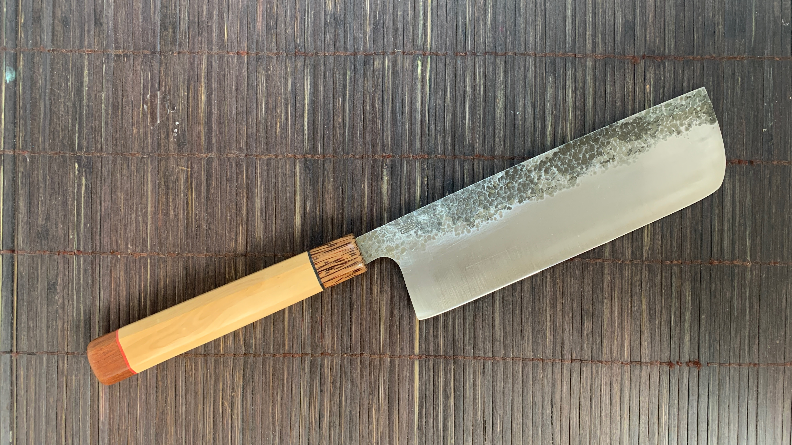
Nakiri
160€ VENDU

Gyuto Hirazukuri Frêne • Loupe d'Orme
90€

Gyuto Hirazukuri Nangka
90€
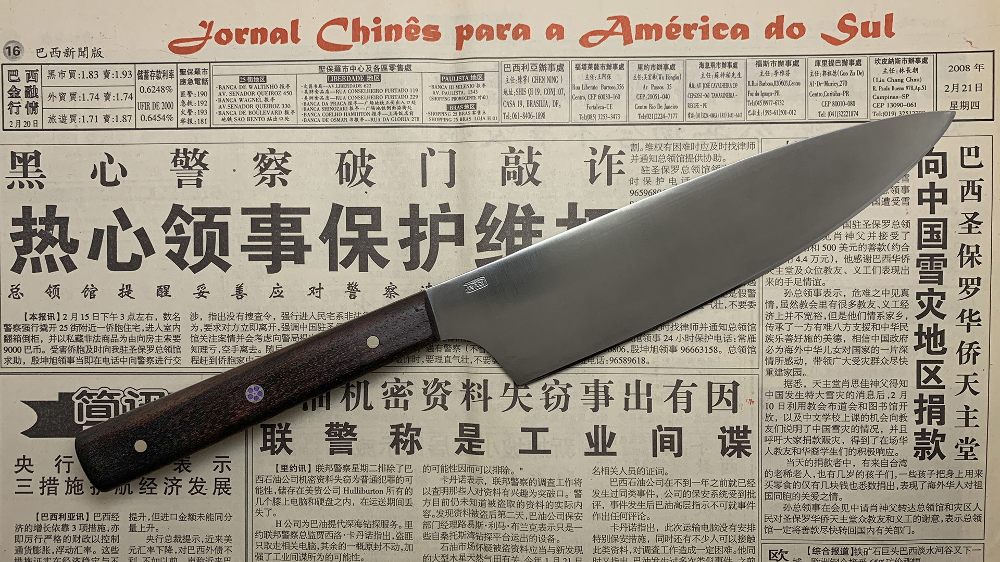
Gyuto Hirazukuri Noyer
90€

Gyuto Hirazukuri Palissandre
90€
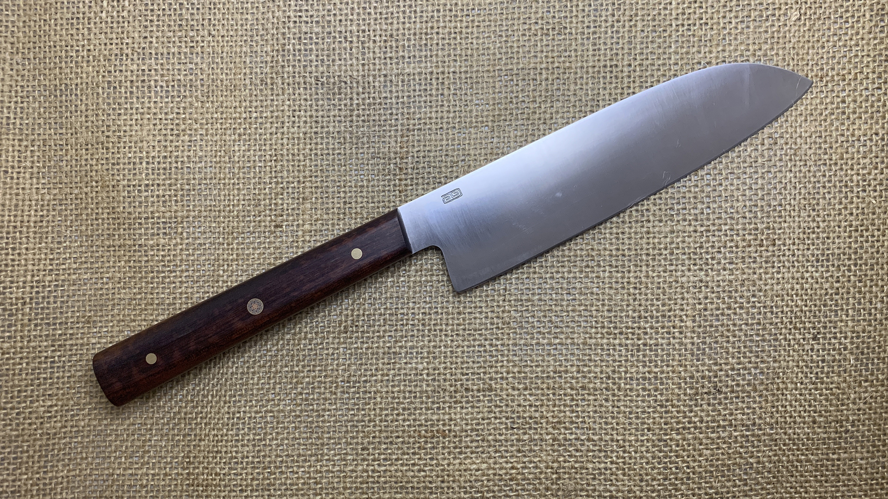
Santoku Hirazukuri Amourette
90€

Santoku Hirazukuri Frêne • Bois stabilisé
90€

Santoku Hirazukuri Bois stabilisé gris
90€

Kudamono Hirazukuri Chêne
50€

Kudamono Hirazukuri Ébène
50€

Kudamono Hirazukuri Loupe d'Orme
50€ VENDU
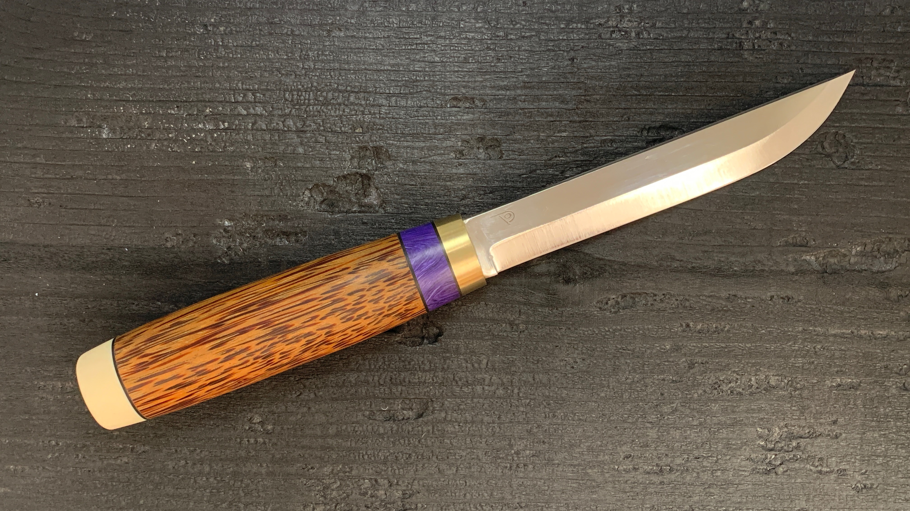
Puukko Inox
140€

Puukko Carbone
110€

Pliant Artisanal
420€
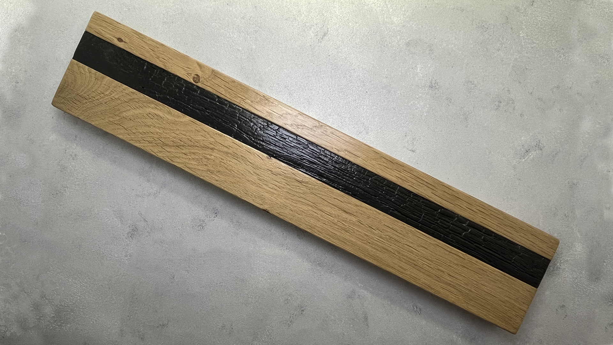
Porte-couteaux Taille XL Yakizugi
60€

Porte-couteaux Taille XL Loupe d'Orme
60€

Porte-couteaux Taille XL Frêne
60€
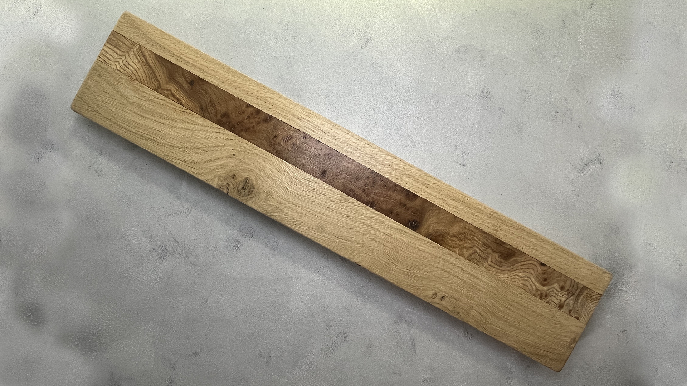
Porte-couteaux Taille XL Loupe d'Orme
60€
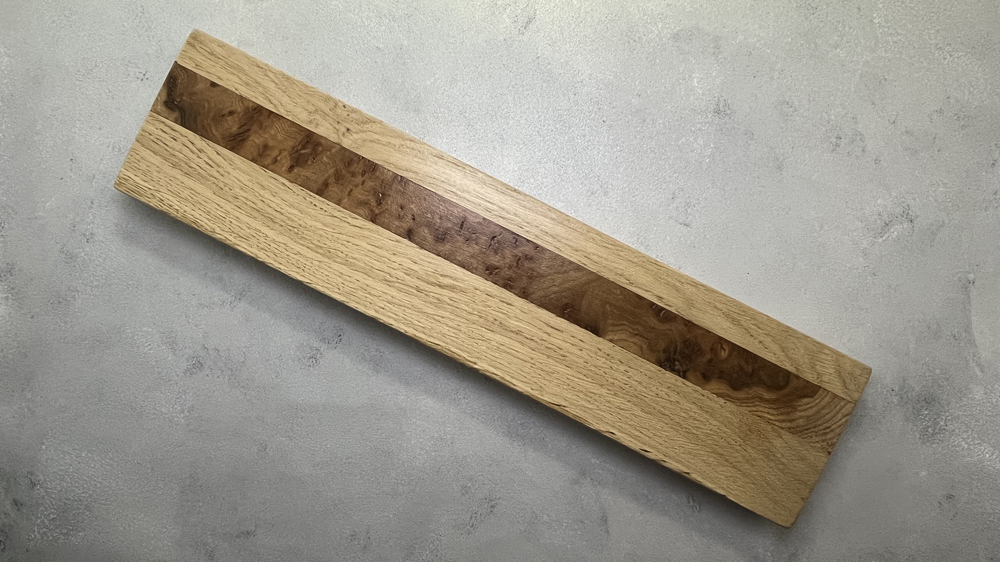
Porte-couteaux Taille M Loupe d'Orme
50€ VENDU

Porte-couteaux Taille M Bleu
50€

Porte-couteaux Taille M Loupe d'Orme
50€

Porte-couteaux Taille M Loupe d'Orme
50€

Porte-couteaux Taille S Yakizugi
40€

Porte-couteaux Taille S Yakizugi
40€
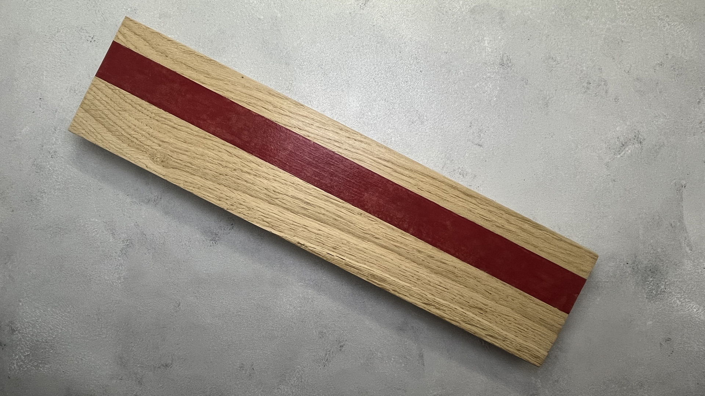
Porte-couteaux Taille S Rouge
40€
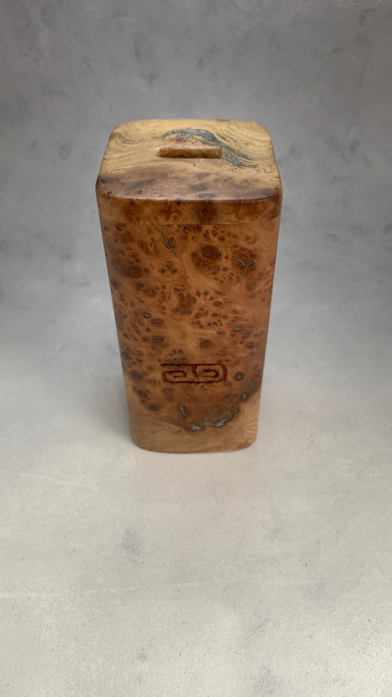
Bloc Porte-couteaux Loupe d'orme
70€
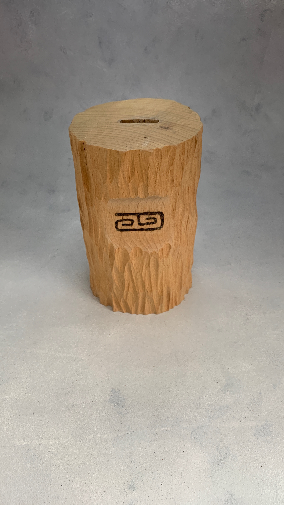
Bloc Porte-couteaux Hêtre
70€
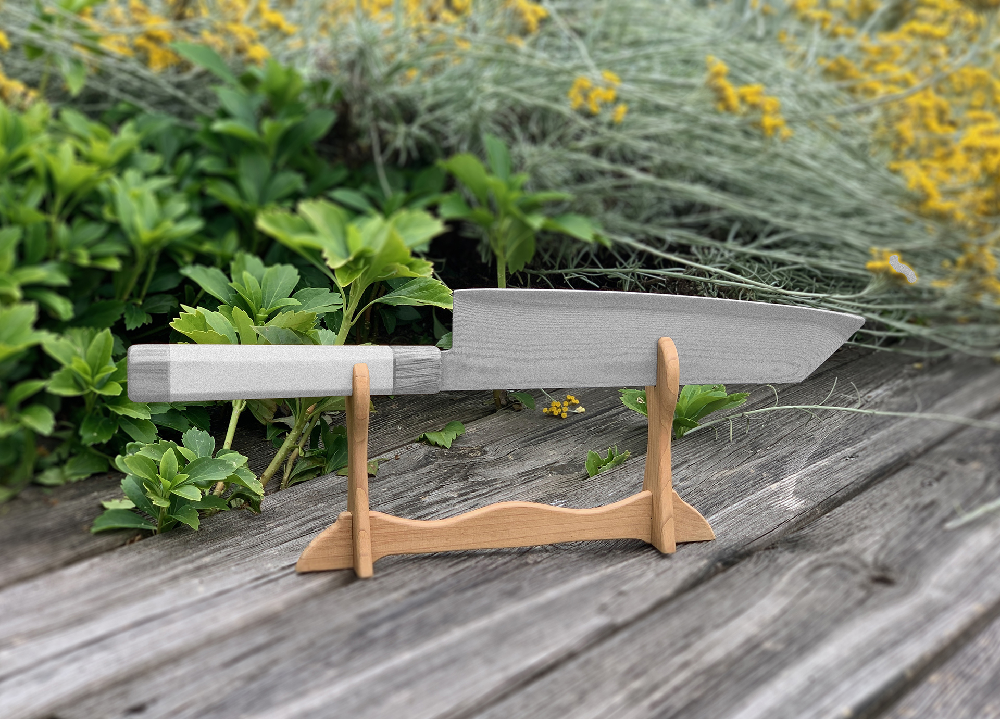
Porte couteau Katanakake
30€
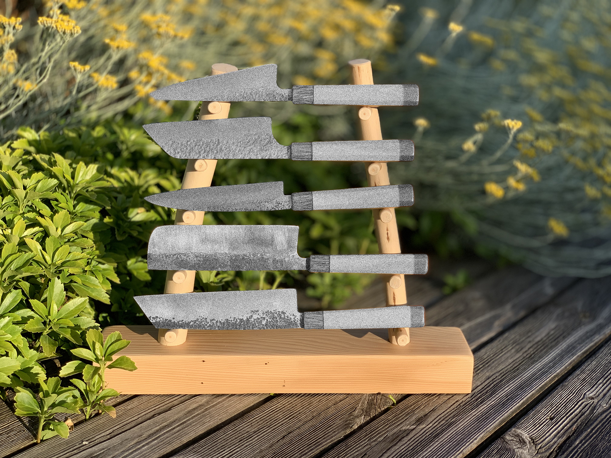
Porte couteau de collection 5 couteaux
60€
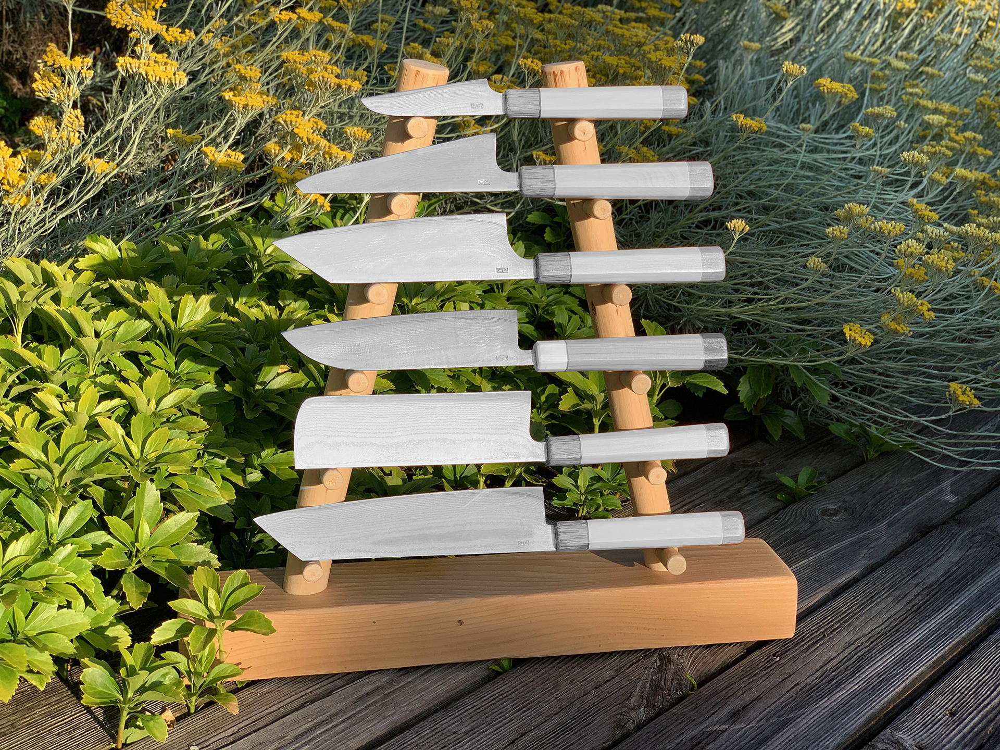
Porte couteau de collection 6 couteaux
70€